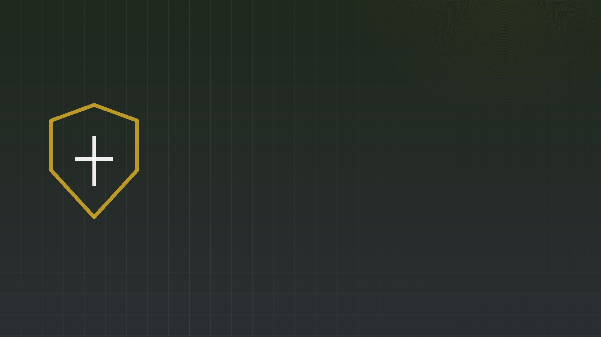

Objetivo
Diseñar un modelo pedagógico para formar competencias de planeación de operaciones de ciberdefensa, integrando la metodología ADM con marcos internacionales de ciberseguridad.
PropósitoCargando portal institucional…

Maestría en Ciberseguridad y Ciberdefensa · EMI
Propuesta formativa basada en la Metodología del Planeamiento Táctico (ADM), articulada con NIST CSF 2.0 y MITRE ATT&CK.
Este portal no es solo un repositorio: es una demostración digital del modelo, que evidencia la trazabilidad completa entre el programa de estudios, el plan de clase, la implementación del modelo, los productos de aprendizaje, los instrumentos de evaluación y el entregable integrador (IPB–MDMP).

El proyecto
Componentes científicos y doctrinarios que sustentan el modelo pedagógico propuesto.
Diseñar un modelo pedagógico para formar competencias de planeación de operaciones de ciberdefensa, integrando la metodología ADM con marcos internacionales de ciberseguridad.
PropósitoUn modelo basado en ADM, alineado con NIST CSF 2.0 y MITRE ATT&CK, mejora significativamente las competencias de planeamiento de ciberdefensa de los participantes.
SupuestoEnfoque mixto con diseño cuasi-experimental: instrumentos validados, rúbricas de desempeño y matrices de evaluación sobre un proceso de planeamiento por fases.
InvestigaciónAnálisis del entorno cibernético, definición del problema, desarrollo de líneas de acción, toma de decisiones y producción de la orden de operaciones.
AprendizajeLa Metodología del Planeamiento Táctico (Army Design Methodology) aporta el razonamiento operacional: enmarcar el entorno, el problema y la aproximación a la solución.
DoctrinaLas funciones Gobernar, Identificar, Proteger, Detectar, Responder y Recuperar estructuran las capacidades de ciberseguridad desarrolladas en el planeamiento.
MarcoBase de conocimiento de tácticas y técnicas adversarias que alimenta el análisis de amenazas (IPB) y la construcción de escenarios realistas.
MarcoDemostración del modelo
Cada etapa muestra qué recibe (entradas) y qué produce (salidas), enlazando con su documento. Un sinodal puede comprender la implementación íntegra del modelo sin necesidad de abrir los descargables. Pulse cada etapa para expandirla.
Ética de la investigación
Lea la información, firme digitalmente y descargue su PDF. Todo ocurre en su navegador: no se envía información a ningún servidor.
Instrumentos de evaluación
Instrumentos con los que se evaluaron las competencias del modelo (escala 1–4). Consulte los criterios y, si lo desea, use el evaluador interactivo para capturar puntajes pre/post y ver las métricas en tiempo real. Todo ocurre en su navegador; nada se envía a un servidor.
Promedios sobre la escala 1–4. La mejora se calcula como ((final − inicial) / inicial) × 100.
Documentación
Productos de la investigación: visualícelos en el visor integrado o descárguelos.
Preparación de inteligencia del campo de batalla integrada al proceso de decisión militar. Documento de carácter reservado; no se difunde públicamente. Su matriz de integración está disponible aquí.
Planificación didáctica de la unidad de aprendizaje aplicada al modelo.
Estructura curricular, competencias y resultados de aprendizaje.
Cuestionarios y pruebas de medición pre y post intervención.
Matrices de decisión, de líneas de acción y de sincronización del planeamiento.
Criterios de evaluación por competencias y niveles de logro.
Plantilla del consentimiento informado. La versión firmable se genera en la sección anterior.
Este formato no puede previsualizarse en el navegador. Descárguelo aquí.
Visual
Representaciones del modelo, su arquitectura y la cadena de trazabilidad. Haga clic para ampliar.
Autoría
Acceso móvil
Este repositorio puede consultarse escaneando el código QR impreso en la tesis, que enlaza directamente a https://moicanogallo.github.io/sitiotesis/ desde cualquier dispositivo móvil.
Comunicación
Formulario de contacto. Al enviar se abre su cliente de correo (sitio estático, sin servidor).